조경산업기사 (2017-03-05 기출문제)
1과목: 조경계획 및 설계
1. 인도의 타지마할(Taj mahal)은 어떤 목적으로 만든 공간인가?
- 왕궁(王宮)
- 분묘(墳墓)
- 귀족 별장(別莊)
- 상류주택정원
(정답률: 93%)

2. 백제 무왕이 궁권 남쪽에 지원(池園)을 꾸민 기록과 거리가 먼 것은?
- 음양석 배치
- 연못에 섬 축조
- 물을 끌어 들여 활용
- 연못 주위에 버드나무 식재
(정답률: 75%)
3. 곡수로를 만들고 그곳에서 유상곡수연을 펼치던 문화와 관계가 있는 기록은?
- 창랑정기
- 난정기
- 청연각연기
- 오흥원림기
(정답률: 74%)
4. 통일신라의 동궁과 월지(안압지) 관련 문헌으로 가장 거리가 먼 것은?
- 삼국사기
- 동경잡기
- 양화소록
- 동국여지승람
(정답률: 65%)
5. 고대 서부아시아의 공중정원(Hanging Garden)에 대한 설명으로 옳지 않은 것은?
- 이슬람시대 4분원의 효시가 되었다.
- 지구라트에 연속된 계단식 테라스로 구성 되었다.
- 네부카드네자르 왕이 왕비를 위해서 축조하였다.
- 벽체의 구조는 벽돌에 아스팔트를 발라 굳혀서 만들었다.
(정답률: 65%)
6. 한나라의 태액지에 대한 설명으로 틀린 것은?
- 태호석을 채취했었다.
- 봉래, 영주, 방장의 세 섬이 있었다.
- 신선사상을 반영한 정원양식이었다.
- 연못 가장자리에는 대리석이나 청동으로 만든 조각물을 배치하였다.
(정답률: 74%)
7. 로마시대의 주택에서 아트리움(atrium)의 설명으로 틀린 것은?
- 모양은 사각형이었다.
- 바닥은 돌로 포장되어 있었다.
- 사적(私的)인 공간인 제2중정이라고도 한다.
- 폼페이(Pomepeii) 주택의 내정(內庭)을 말한다.
(정답률: 78%)
8. 상류주택에 모란(牡丹)이 대규모로 심겨졌던 국가는?
- 발해
- 신라
- 고구려
- 백제
(정답률: 74%)
9. 조경계획의 조사 분석 항목인자는 7가지로 구분되는 데, 이중 지권(地圈)과 관련성이 가장 먼 것은?
- 토양
- 지하수
- 지질
- 경사도
(정답률: 80%)
10. 조경과 관련된 학문영역의 설명으로 틀린 것은?
- 사회적 요소에는 인간의 형태, 사회적 가치, 규범 등이 있다.
- 표현기법에는 표현 방법, 표현 기술 등 미적훈련을 위한 분야가 있다.
- 자연적 요소에는 지질, 토양, 수문, 지형, 기후식생, 야생동물 등이 있다.
- 설계방법론에는 식재공법, 우수배수, 포장기술, 구조학, 재료학 등이 있다.
(정답률: 67%)
11. 조경계획의 사회 행태적 분석 중 인간행태관찰의 특성이라 볼 수 없는 것은?
- 정적(靜的)인 행태를 관찰하는 것이다.
- 행태가 일어나는 상황을 보다 절실하게 파악 할 수 있다.
- 인터뷰를 하는 경우에는 얻지 못하는 내용을 직접 관찰시에는 수집이 가능하다.
- 관찰자는 행위자들이 관찰자 자신을 어느 정도 인식하도록 할 것인가를 결정해야 한다.
(정답률: 78%)
12. 다음 중 체육시설업의 분류 방법이 다른 것은?
- 스키장업
- 태권도장업
- 무도학원업
- 빙상장업
(정답률: 59%)
13. 조경계획을 위한 물리적 분석 중에서 지역성 분석에 포함되는 항목으로서 거시적 분석 항목이 아닌 것은?
- 주변 지형과의 관계
- 주변 지역과의 연관성
- 접근로 및 위치
- 경사 분석도
(정답률: 78%)
14. 도시의 자연적 환경을 보전하거나 이를 개선하고 이미 자연이 훼손된 지역을 복원ㆍ개선함으로써 도시경관을 향상시키기 위하여 설치하는 녹지를 무엇이라 하는가? (단, 도시공원 및 녹지 등에 관한 법률을 적용한다.)
- 생산녹지
- 완충녹지
- 연결녹지
- 경관녹지
(정답률: 65%)
15. 그림에서 제3각법에 따라 도면을 작성할 때 평면도는?
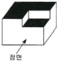
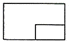
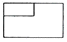
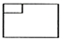
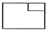
(정답률: 86%)
16. 평행주차형식 외의 경우에 일반형(A)과 장애인 전용(B) 주차단위구획의 최소 규모 기준이 모두 맞는 것은?(단, 단위는 m, 표시는 너비×길이로 한다.)
- A : 2.0×5.0, B : 3.3×6.0
- A : 2.0×6.0, B : 3.3×6.0
- A : 2.3×5.0, B : 3.3×5.0
- A : 2.3×6.0, B : 3.3×5.0
(정답률: 79%)
17. 주택정원의 공간 중 가장 이용이 많이 이루어지며, 우리나라의 전통마당에 해당되는 공간은?
- 후정
- 전정
- 작업정
- 주정
(정답률: 69%)
18. 다음 선과 관련된 설명 중 틀린 것은?
- 강의 흐름은 S커브의 한 형태라 할 수 있다.
- 방향은 수직, 수평 및 좌우 사방향(斜方向)이 있다.
- 선은 점보다 훨씬 강력한 심리적 효과를 가지고 있다.
- 곡선 중에서 기하곡선은 가장 여성적인 아름다움을 준다.
(정답률: 68%)
19. 색의 감정적인 효과 설명으로 옳지 않은 것은?
- 고채도, 고명도의 색은 화려하다.
- 색의 중량감은 채도에 의한 영향이 가장 크다.
- 색의 온도감은 색상에 의한 효과가 가장 크다.
- 채도가 낮고 명도가 높은 색은 부드러워 보인다.
(정답률: 60%)
20. 다음 공장정원의 설계 시 ( )안에 해당하는 것은?
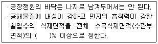
- 40
- 50
- 60
- 70
(정답률: 59%)
2과목: 조경식재
21. 다음 중 자생종이면서 상록수가 아닌 수종은?
- 붓순나무
- 미선나무
- 죽절초
- 비쭈기나무
(정답률: 82%)
22. 조경수목을 식재할 때 가장 이상적인 지하수위(地下水位)는 얼마인가? (단, 주로 토양단면의 상태를 조사할 경우)
- 0.5m 이하
- 0.5 ~ 1.0m
- 1.0 ~ 1.5m
- 2.0m 이상
(정답률: 63%)
23. 수피에 얼룩무늬가 있어 감상가치가 높은 수종이 아닌 것은?
- Stewartia pseudocamellia
- Crataegus pinnatifida
- Pinus bungeana
- Chaenomeles sinensis
(정답률: 47%)
24. “Zelkova serrata”의 수관 기본형으로 적당한 것은?
- 원통형(圓筒形)

- 배형(盃形)

- 수지형(垂枝形)

- 구형(球形)

(정답률: 74%)
25. 다음 [보기] 중 ( )안에 적합한 용어는?
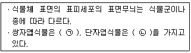
- ㉠ : 평행맥, ㉡ : 장상맥
- ㉠ : 그물맥, ㉡ : 부정맥
- ㉠ : 망상맥, ㉡ : 평행맥
- ㉠ : 격자맥, ㉡ : 원형맥
(정답률: 69%)
26. 학명의 종명(種名) 중 잎의 모양(leaf form)을 표현한 것은?
- stellata
- parviflora
- glabra
- umbellate
(정답률: 67%)
27. '산목련'이라고 불리고 있는 수종으로 순백색의 청순한 꽃과 아취형 수형을 가진 수종은?
- Magnolia siebolldii
- Magnolia obovata
- Magnolia denudata
- Magnolia kobus
(정답률: 52%)
28. 하부식재(지피; 地被)용 식물의 조건으로 맞는 것은?
- 1년생 자생식물
- 내음성이 약한 식물
- 피복속도가 빠른 식물
- 꽃과 잎이 관상가치가 없는 식물
(정답률: 87%)
29. 굴취 된 수목을 차량으로 운반시 유의하여야 할 사항으로 틀린 것은?
- 수목의 호흡작용을 위하여 시트(천막)을 덮지 않도록 한다.
- 진동을 방지하기 위하여 차량 바닥에 흙이나 거적을 깐다.
- 부피를 작게 하기 위하여 가지를 죄어 맨다.
- 운반시는 땅바닥에 끌어대는 일이 없도록 한다.
(정답률: 65%)
30. 잔디 종자의 수명을 연장하는 방법으로 틀린 것은?
- 저온저장
- 충분한 건조
- 수분의 공급
- 산소의 제약(制約)
(정답률: 72%)
31. 실내의 내음성 식물이 빛의 광도가 너무 강한 때의 현상은?
- 잎이 황색으로 변한다.
- 점차적으로 잎이 떨어진다.
- 잎의 두께가 얇아지고 줄기가 가늘어진다.
- 잎이 마르고 희게 되며 나중에는 죽게 된다.
(정답률: 70%)
32. 옥상녹화 시 식재할 때 가장 고려해야 할 것은?
- 식재의 간격
- 식재의 형태
- 병충해관리
- 관수와 배수
(정답률: 92%)
33. 다음은 온대중부지역의 천이단계를 나타낸 것이다. ( )안의 단계에 들어갈 적합한 수종은?
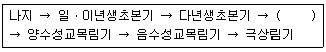
- 찔레나무
- 신갈나무
- 소나무
- 서어나무
(정답률: 68%)
34. 일반적으로 수목의 거친 질감을 구성하는 것으로 틀린 것은?
- 커다란 잎
- 굵고 큰 가지
- 산만하게 형성된 수관형
- 밀집된 잔가지
(정답률: 69%)
35. 다음 [보기]에서 설명하고 있는 식물은?
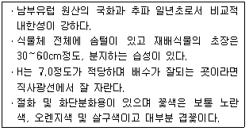
- 금어초
- 천일홍
- 글록시니아
- 금잔화
(정답률: 61%)
36. 다음 수종 중 잎의 질감이 고운 것은?
- 자귀나무
- 오동나무
- 벽오동
- 일본목련
(정답률: 76%)
37. 바람이 강한 지방에서 방풍을 겸해서 택지 주위에 산울타리를 조성할 때 그 높이는 어느 정도가 가장 알맞은 가?
- 1 ~ 2m
- 3 ~ 5m
- 5 ~ 8m
- 8m 이상
(정답률: 69%)
38. 학명이 이명법(binomials)이라고 불리는 이유는?
- 속명 + 명명자로 구성
- 보통명 + 종명으로 구성
- 속명 + 종명으로 구성
- 종명 + 명명자로 구성
(정답률: 78%)
39. 수목의 뿌리분포를 가정(假定)하는 가장 적당한 기준은?
- 수고(樹高)
- 수관폭(樹冠幅)
- 분지수(分枝數)
- 수간(樹幹)의 굵기
(정답률: 78%)
40. 예로부터 마을의 정자목으로 이용된 수종은?
- Paeonia suffruticosa
- Lonicera japonica
- Acuba japonica
- Zelkova serrata
(정답률: 68%)
3과목: 조경시공
41. 비탈면녹화와 관련된 설명 중 틀린 것은?
- 녹화공법의 안전성 및 경제성은 물론 선정된 녹화식물의 생육과 식물군락 형성에 가장 적합한 공법을 선정하되, 동일 비탈면에는 동일공법의 적용을 원칙으로 한다.
- 토양의 비탈면 기울기가 1:1 보다 완만할 때에는 급할 때 보다 비탈면을 단계적으로 녹화하기 위해서 잔디종자를 사용하여 발아 시킨다.
- 피복도와 생육상태를 감안한 일반적인 파종적기는 4~6월 또는 9~10월 이며, 파종시기에 따라 종자배합을 적절히 조정하여야 한다.
- 비탈면 줄떼 다지기는 잔디폭이 0.1m이상 되도록 하고, 비탈면에 0.1m이내 간격으로 수평골을 파서 수평으로 심고 다짐을 철저히 한다.
(정답률: 57%)
42. 조적용 모르타르의 강도 중 가장 주요한 것은?
- 압축강도
- 전단강도
- 접착강도
- 인장강도
(정답률: 63%)
43. 실개울의 수경연출 시 흐르는 물에서 음향효과와 동시에 수포를 발생시키기 위해서는 매닝공식(Manning Formula)을 기준으로 할 경우 일반적인 유속 (A)와 경사 (B)는 얼마를 유지하여야 하는가?
- A : 0.5 ~ 1.0m/s, B : 10~11%
- A : 1.0 ~ 1.5m/s, B : 12~15%
- A : 1.7 ~ 1.8m/s, B : 16~17%
- A : 2.0 ~ 2.5m/s, B : 18~20%
(정답률: 54%)
44. 도로계획의 종단면도에서 알 수 없는 것은?
- 계획고
- 지반고
- 성토고
- 면적
(정답률: 78%)
45. 혼화재료 중 사용량이 비교적 많아서 그 자체의 부피가 콘크리트 비비기 용적에 계산되는 혼화재에 해당하지않는 것은?
- 팽창재
- 플라이애쉬
- 고성능 AE감수제
- 고로슬래그 미분말
(정답률: 63%)
46. 조경공사 시 시공에 있어서 수급인을 대신하여 공사 현장에 관한 일체의 사항을 처리하는 권한을 갖는 자를 말한다. 일반적으로 현장소장 등 이라고 불리고 있는 자는?
- 감독자
- 감리자
- 시공주
- 현장대리인
(정답률: 78%)
47. 수고 2.0m인 주목 15주를 인력시공으로 식재할 때의 공사비는?
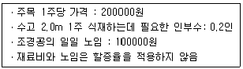
- 220000원
- 330000원
- 3300000원
- 4500000원
(정답률: 74%)
48. 지표의 임의의 한 점에서 그 경사가 최대로 되는 방향을 표시하는 선을 말하며 등고선에 직각으로 교차하는 것을 무엇이라 하는가?
- 분수선
- 유하선
- 합수선
- 경사변환선
(정답률: 54%)
49. 표준품셈에 대한 설명 중 틀린 것은?
- 공사의 예정가격 산정 시 활용할 수 있다.
- 표준품셈에서 제시된 품은 일일 작업시간 8시간을 기준한 것이다.
- 재료비, 노무비, 직접경비가 포함된 공종별 단가를 계약단가에서 추출하여 유사 공사의 예정가격 산정에 활용하는 방식이다.
- 건설공사의 예정가격 산정시 공사규모, 공사기간 및 현장조건 등을 감안하여 가장 합리적인 공법을 채택 적용한다.
(정답률: 55%)
50. 콘크리트의 워커빌리티(Workability)와 관련된 설명으로 틀린 것은?
- 타설할 때 공기연행제(AE제)를 첨가하면 워커빌리티가 크게 개선된다.
- 타설할 때 콘크리트에 단위수량이 많으면 워커빌리티가 좋아진다.
- 타설할 때 충분히 잘 비비면 워커빌리티가 좋아진다.
- 적정한 배합을 갖지 못하면 워커빌리티가 좋지 않다.
(정답률: 78%)
51. 임해매립지 식재기반조성 시 흙쌓기의 설명 중 ( )안에 알맞은 것은?
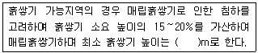
- 1.0
- 1.5
- 2.0
- 2.5
(정답률: 69%)
52. 다음 수준측량의 야장에서 측점 3의 지반고는 얼마인가?
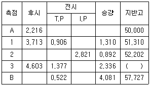
- 53.646m
- 52.620m
- 52.336m
- 51.202m
(정답률: 56%)
53. 체적환산에 적용되는 토량 변화율과 관련된 설명으로 옳은 것은?
- 경암과 풍화암은 C값은 1이 넘는다.
- 절토 토량의 운반비 산정을 위해 적용한다.
- 흐트러진 상태의 체적을 자연상태의 체적으로 나눈값이다.
- 토량의 체적환산계수 f값 산정시에는 적용하지 않는 다.
(정답률: 45%)
54. 목재 방부제에 관한 설명으로 틀린 것은?
- 방부제는 침투성이 있어야 한다.
- 크레오소트는 80 ~ 90 ℃로 가열 후 도포한다.
- 유성방부제에는 염화아연 4%용액, 황산구리 등이 있다.
- 방부제의 조건으로는 사람과 가축에 해가 없는 것이어야 한다.
(정답률: 55%)
55. 어느 공사현장에서 사토장까지의 거리가 12km라고 한다. 덤프트럭을 이용하여 적재한 토사를 사토하고 적재장소까지 돌아오는 데 소요되는 왕복시간은? (단, 적재시 평균주행속도는 50km/h이며, 공차시의 평균주행속도는 적재 시보다 20% 증가한다.)
- 28.8분
- 26.4분
- 24.0분
- 20.0분
(정답률: 57%)
56. 살수기(撒水器)에 관한 설명으로 옳지 않은 것은?
- 분무살수기는 고정된 동체와 분사공만으로 된 가장 간단한 살수기이다.
- 분무입상살수기는 살수 시 긴 잔디에 의해 방해 받지 않는다.
- 분류살수기는 바람의 영향을 적게 받으며, 낮은 압력 하에서도 작동한다.
- 회전입상살수기는 낮은 압력에서도 작동되며, 소규모 관개지역에서 사용한다.
(정답률: 70%)
57. 플라스틱 재료에 관한 설명으로 옳지 않은 것은?
- 아크릴수지는 투명도가 높아 유기유리로 불린다.
- 멜라민수지는 내수, 내약품성은 우수하나 표면경도가 낮다.
- 불포화 폴리에스테르수지는 유리섬유로 보강하여 사용되는 경우가 많다.
- 실리콘수지는 내열성, 내한성이 우수한 수지로 콘크리트의 발수성 방수도료에 적당하다.
(정답률: 56%)
58. 다음 모멘트의 설명 중 옳지 않은 것은?
- 모멘트의 단위는 kgㆍm, tㆍm 이다.
- 힘의 크기는 중량단위로 표시한다.
- 모멘트는 모멘트 팔과 힘의 크기 곱으로 구한다.
- 모멘트 부호는 회전방향이 시계방향일 때 (-)로 표시한다.
(정답률: 77%)
59. 다음과 같은 네트워크 공정표에서 한계경로는?
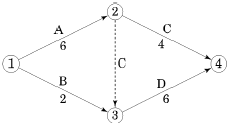
- ① → ② → ④
- ① → ③ → ④
- ① → ② → ③ → ④
- ① → ③ → ② → ④
(정답률: 77%)
60. 수량산출시 체적 혹은 면적을 구조물의 수량에서 공제하여야 되는 것은?
- 목재 각재의 모따기 체적
- 철근 콘크리트 중의 철근
- 포장공사 이음줄눈의 간격
- 보도블럭 포장 공종의 1개소 당 면적이 1m2되는 맨홀 면적
(정답률: 59%)
4과목: 조경관리
61. 벤치, 야외탁자의 관리에 관한 설명으로 옳은 것은?
- 바닥지면에 물이 고이는 곳은 자연적인 현상으로 큰 문제가 되지 않는다.
- 노인, 주부 등이 장시간 머무르는 곳의 목재벤치는 내구성이 강한 석재나 콘크리트재로 교체한다.
- 이용자의 수가 설계 시의 추정치보다 많은 경우에는 이용실태를 고려하여 개소를 증설하여 이용자 편의를 도모한다.
- 여름철 녹음 부족, 겨울철 햇빛이 잘 들지 않는 곳의 시설에는 차광시설, 녹음수 등은 식재하거나 설치할 수 없다.
(정답률: 74%)
62. 병원체의 활동과 병의 진행을 알려주는 일련의 과정을 지칭하는 용어는?
- 병환
- 병삼각형
- 코흐의 원칙
- 미생물병원설
(정답률: 78%)
63. 유지관리 계획에 영향을 미치는 요인으로 가장 거리가 먼 것은?
- 시공방법
- 계획이나 설계목적
- 관리대상의 질과 양
- 이용빈도와 이용실태
(정답률: 59%)
64. 건조 목재벤치를 가해하는 충류에 해당하지 않는 것은?
- 솔수염하늘소
- 가루나무좀
- 개나무좀
- 빗살수염벌레
(정답률: 70%)
65. 유기물이 토양에 첨가되면 일반적으로 식물의 생장에 유리해지는데, 이러한 근거는 유기물이 토양의 물리적, 화학적 성질을 개선해주기 때문이다. 유기물의 토양 개선 내용으로 적합하지 않은 것은?
- 토양공극과 통기성을 증가시켜 준다.
- 토양온도의 변화 폭을 크게 해 준다.
- 토양미생물이 필요로 하는 에너지를 제공한다.
- 토양의 무기양료에 대한 흡착능력(보존능력)을 향상시킨다.
(정답률: 74%)
66. 역T형 옹벽과 비슷하지만 안정성이 더 요구되거나 높은 옹벽에 적용되며 저판이 길기 때문에 저판상의 성토가 자중으로 간주되므로 안정되며 경제성이 높은 옹벽은?
- L형 옹벽
- 중력식 옹벽
- 부벽식 옹벽
- 지지벽 옹벽
(정답률: 67%)
67. 24%의 A유제 100mL를 0.03%로 희석하여 진딧물에 살포하려 한다. 물의 양은 얼마로 하여야 하는가? (단, A 유제 비중은 1로 한다.)
- 18000mL
- 24000mL
- 47120mL
- 79900mL
(정답률: 54%)
68. 도시공원대장에 기입해야 할 사항이 아닌 것은?
- 공원의 관리방법
- 공원의 연혁
- 지구단위계획 사항
- 공원시설에 관한 사항
(정답률: 61%)
69. 응애류(mite)에 관한 설명 중 틀린 것은?
- 잎의 즙액을 빨아 먹는다.
- 침엽수에도 폭넓게 피해를 준다.
- 천적으로 바구미, 사슴벌레 등이 있다.
- 수관에서 불규칙하게 피해증상(황화현상)이 나타난다.
(정답률: 61%)
70. 소나무나 섬잣나무 등의 높은 부분을 사다리를 사용하지 않고, 끝가지를 전정하거나 열매를 채취시 사용하기 접합한 가위의 종류는?
- 적과가위
- 순치기가위
- 대형전정가위
- 갈고리전정가위
(정답률: 75%)
71. 옥외 레크리에이션 관리체계의 3가지 기본요소와 가장 거리가 먼 것은?
- 이용자(Visitor)
- 계획가(Planner)
- 관리(Management)
- 자연자원기반(Natural Resource Base)
(정답률: 69%)
72. 노거수(老巨樹) 관리에 있어서 공동(空胴)의 처리과정 중 D에 해당하는 것은?
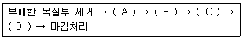
- 버팀대 박기
- 살균 및 치료하기
- 공동 내부 다듬기
- 공동충전재료 메우기
(정답률: 71%)
73. 점토광물이 형태상의 변화 없이, 내ㆍ외부의 이온이 치환되어 점토광물 표면에 음전하를 갖게 하는 현상을 무엇이라고 하는가?
- 동형치환
- pH 의존전하
- 변두리 전하
- 잠시적 전하
(정답률: 72%)
74. 골프장의 잔디를 낮은 잔디깎기 하였을 때 효과로 틀린 것은?
- 엽폭을 감소시켜서 보다 재질감이 좋은 잔디를 만들 수 있다.
- 식물조직이 단단해지므로 병이나 해충에 대하여 강해지게 된다.
- 엽면적의 감소로 광합성양이 떨어지므로 탄수화물의 저장량이 감소된다.
- 분얼경의 형성을 촉진시키므로 결국 줄기밀도가 증가하여 지표면을 조밀하게 해준다.
(정답률: 64%)
75. 잔디에 잘 발생되는 녹병의 재배적(화학적) 방제법에 해당되지 않는 것은?
- 충분한 양으로 오전에 관수한다.
- 질소질 비료를 살포하여 시비로 생육을 도모한다.
- 메프로닐 수화제를 발병 초부터 7일 간격으로 3회 살포한다.
- 조경수의 전정이나 차폐수 등을 잘 관리하여 공기의 흐름을 원활히 한다.
(정답률: 50%)
76. 유희시설 목재부분의 이상 유무를 점검하는데 가장 거리가 먼 것은?
- 갈라진 부분이나 뒤틀린 부분
- 축 및 축수의 마모나 이완상태
- 부패되거나 충해에 의한 손상 여부
- 충격에 의한 파손이나 이용에 의한 마모상태
(정답률: 76%)
77. 벚나무 빗자루병의 병원체는 무엇인가?
- 세균
- 담자균
- 자낭균
- virus
(정답률: 64%)
78. 두 제초제 혼합 시 나타내는 길항작용(拮抗作用, antagonism)의 정의로 가장 적합한 것은?
- 혼합시의 처리 효과가 단독처리시의 효과보다 큰 것을 의미
- 혼합시의 효과가 단독처리시의 효과와 같은 것을 의미
- 혼합시의 처리효과가 활성이 높은 물질의 단독효과보다 작은 것을 의미
- 혼합시의 처리 효과가 단독처리시의 효과보다 크지도 작지도 않은 것을 의미
(정답률: 61%)
79. 훈증제가 갖추어야 할 조건으로 틀린 것은?
- 비인화성이어야 한다.
- 휘발성이 크고 농도가 균일하여야 한다.
- 침투성이 커서 약제가 쉽게 도달하여야 한다.
- 훈증할 목적물에 이화학적으로 변화를 주어야한다.
(정답률: 63%)
80. 종자 비료 그리고 흙을 혼합하여 망(net)에 놓고 비탈면의 수평으로 판 골(滑) 속에 넣어 붙이는 공법으로 유실이 적으며, 유연성이 있기 때문에 지반에 밀착하기 쉬운 것은?
- 식생띠(帶)공
- 식생판(板)공
- 식생자루(袋)공
- 식생구멍(穴)공
(정답률: 75%)